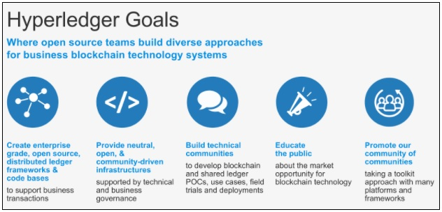
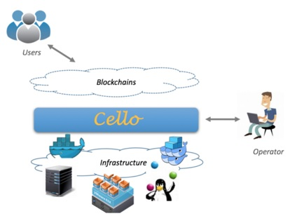

notes
Table of Contents
- 1. Course Learning Objectives
- 2. Hyperledger
- 3. The Linux Foundation
- 4. Chapter 1. Discovering Blockchain Technologies
- 4.1. Distributed Ledger Technology (DLT)
- 4.1.1. Background - The Rising Interest in Distributed Ledger Technologies
- 4.1.2. Distributed Ledger Technology (DLT)
- 4.1.3. Blockchains
- 4.1.4. Merkle Tree
- 4.1.5. Transactions
- 4.1.6. Differences between Blockchains and Databases
- 4.1.7. Types of Blockchains
- 4.1.8. Peer-to-Peer Network Architecture
- 4.1.9. Immutability of Data
- 4.1.10. Blockchain Applications
- 4.1.11. Smart Contracts
- 4.2. Bitcoin and Ethereum Blockchains
- 4.3. Exploring Permissionless Blockchains
- 4.4. Consensus Algorithms
- 4.5. Proof of Work (PoW)
- 4.6. Proof of Stake (PoS)
- 4.7. Proof of Elapsed Time (PoET)
- 4.8. Simplified Byzantine Fault Tolerance (SBFT)
- 4.9. Proof of Authority (PoA)
- 4.10. Comparing Permissioned Consensus Approaches and Standard PoW
- 4.11. Hyperledger
- 4.12. Other Open Source Permissioned Distributed Ledgers
- 4.13. Challenges in the Adoption/Deployment of Distributed Ledger Technologies
- 4.14. Conclusion
- 4.1. Distributed Ledger Technology (DLT)
- 5. Chapter 2. Introduction to Hyperledger
- 6. Chapter 3. The Promise of Business Blockchain Technologies
1 Course Learning Objectives
By taking this course, you will be able to:
- Describe Business Blockchain and Distributed Ledger Technologies.
- Gain familiarity with current Hyperledger projects and cross-industry use cases.
- Perform clean installations of the Hyperledger Sawtooth and Hyperledger Fabric frameworks.
- Explore a sample use case/application in the context of the Hyperledger Sawtooth and Hyperledger Fabric frameworks.
- Build simple applications on top of Hyperledger Sawtooth and Hyperledger Fabric.
- Become involved in and contribute to the open source Hyperledger projects.
2 Hyperledger
Hyperledger is the umbrella open source project that The Linux Foundation has created and hosted since 2015. It aims at advancing and promoting cross-industry blockchain technologies to ensure accountability, transparency, and trust among business partners. As a result, Hyperledger makes business network and transactions more efficient.
These benefits are valued by leaders across many industries, including technology, finance, healthcare, supply chain, and automotive, among several others.
Hyperledger offers different blockchain platforms. This course will present three of them: Iroha, Sawtooth, and Fabric.
To learn more about the Hyperledger, click here
3 The Linux Foundation
The Linux Foundation partners with the world's leading developers and companies to solve the hardest technology problems and accelerate open technology development and commercial adoption. The Linux Foundation makes it its mission to provide experience and expertise to any initiative working to solve complex problems through open source collaboration, providing the tools to scale open source projects: security best practices, governance, operations and ecosystem development, training and certification, licensing, and promotion.
Linux is the world's largest and most pervasive open source software project in history. The Linux Foundation is home to Linux creator Linus Torvalds and lead maintainer Greg Kroah-Hartman, and provides a neutral home where Linux kernel development can be protected and accelerated for years to come. The success of Linux has catalyzed growth in the open source community, demonstrating the commercial efficacy of open source and inspiring countless new projects across all industries and levels of the technology stack.
The Linux Foundation's work today extends far beyond Linux, fostering innovation at every layer of the software stack. The Linux Foundation is the umbrella organization for many critical open source projects that power corporations today, spanning all industry sectors:
- Big data and analytics: ODPi, R Consortium
- Networking: OpenDaylight, OPNFV
- Embedded: Dronecode, Zephyr
- Web tools: JS Foundation, Node.js
- Cloud computing: Cloud Foundry, Cloud Native Computing Foundation, Open Container Initiative
- Automotive: Automotive Grade Linux
- Security: The Core Infrastructure Initiative
- Blockchain: Hyperledger
- And many more.
To learn more about The Linux Foundation, click here
4 Chapter 1. Discovering Blockchain Technologies
By the end of this chapter you should be able to:
- Discuss blockchain and distributed ledger technologies (DLT).
- Explore permissioned and permissionless blockchains and their key characteristics.
- Discuss various components of distributed ledger technologies, including consensus algorithms and smart contracts.
- Provide a high-level explanation of what Hyperledger is.
4.1 Distributed Ledger Technology (DLT)
4.1.1 Background - The Rising Interest in Distributed Ledger Technologies
Looking back to the last half century of computer technologies and architectures, one may observe a trend of fluctuation between the centralization and subsequent decentralization of computing power, storage, infrastructure, protocols, and code.
Mainframe computers are largely centralized. They typically house all computing power, memory, data storage, and code. Access to mainframes is mainly by 'dumb terminals', which only take inputs and outputs, and do not store or process data.
With the advent of personal computers and private networks, similar computational capabilities were now housed both on the clients, as well as the servers. This, in part, gave rise to the 'client-server' architecture, which supported the development of relational database systems. Massive data sets, which are housed on mainframes, could move onto a distributed architecture. This data could replicate from server to server, and subsets of the data could be accessed and processed on clients, and then, synced back to the server.
Over time, Internet and cloud computing architectures enabled global access from a variety of computing devices; whereas mainframes were largely designed to address the needs of large corporations and governments. Even though this 'cloud architecture' is decentralized in terms of hardware, it has given rise to application-level centralization (e.g. Facebook, Twitter, Google, etc).
Currently, we are witnessing the transition from centralized computing, storage, and processing to decentralized architectures and systems. According to Muneeb Ali, these systems aim to
"give explicit control of digital assets to end-users and remove the need to trust any third-party servers and infrastructure".
Distributed ledger technology is one of the key innovations making this shift possible.
4.1.2 Distributed Ledger Technology (DLT)
A distributed ledger is a type of data structure which resides across multiple computer devices, generally spread across locations or regions.
Distributed Ledger Technology includes blockchain technologies and smart contracts. While distributed ledgers existed prior to Bitcoin, the Bitcoin blockchain marks the convergence of a host of technologies, including timestamping of transactions, Peer-to-Peer (P2P) networks, cryptography, and shared computational power, along with a new consensus algorithm.
In summary, distributed ledger technology generally consists of three basic components:
- A data model that captures the current state of the ledger
- A language of transactions that changes the ledger state
- A protocol used to build consensus among participants around which transactions will be accepted, and in what order, by the ledger.
4.1.3 Blockchains
According to hyperledger.org,
"A blockchain is a peer-to-peer distributed ledger forged by consensus, combined with a system for "smart contracts" and other assistive technologies."
- Smart contracts are simply computer programs that execute predefined actions when certain conditions within the system are met.
- Consensus refers to a system of ensuring that parties agree to a certain state of the system as the true state.
Blockchain is a specific form or subset of distributed ledger technologies, which constructs a chronological chain of blocks, hence the name 'block-chain'. A block refers to a set of transactions that are bundled together and added to the chain at the same time. In the Bitcoin blockchain, the miner nodes bundle unconfirmed and valid transactions into a block. Each block contains a given number of transactions. In the Bitcoin network, miners must solve a cryptographic challenge to propose the next block. This process is known as 'proof of work', and requires significant computing power. We shall discuss proof of work in more detail in the Consensus Algorithms section. For a brief history of blockchain technology, please click here.
Timestamping is another key feature of blockchain technology. Each block is timestamped, with each new block referring to the previous block. Combined with cryptographic hashes, this timestamped chain of blocks provides an immutable record of all transactions in the network, from the very first (or genesis) block.
A block commonly consists of four pieces of metadata:
- The reference to the previous block
- The proof of work, also known as a nonce
- The timestamp
- The Merkle tree root for the transactions included in this block.
4.1.4 Merkle Tree
The Merkle tree, also known as a binary hash tree, is a data structure that is used to store hashes of the individual data in large datasets in a way to make the verification of the dataset efficient. It is an anti-tamper mechanism to ensure that the large dataset has not been changed. The word 'tree' is used to refer to a branching data structure in computer science, as seen in the image below. According to Andreas M. Antonopoulos, in the Bitcoin protocol,
"Merkle trees are used to summarize all the transactions in a block, producing an overall digital fingerprint of the entire set of transactions, providing a very efficient process to verify whether a transaction is included in a block."

Figure 1: Bitcoin Block Data (licensed under Creative Commons Attribution-Share-Alike 3.0 Unported, retrieved from Wikipedia)
4.1.5 Transactions
The record of an event, cryptographically secured with a digital signature, that is verified, ordered, and bundled together into blocks, form the transactions in the blockchain. In the Bitcoin blockchain, transactions involve the transfer of bitcoins, while in other blockchains, transactions may involve the transfer of any asset or a record of some service being rendered. Furthermore, a smart contract within the blockchain may allow automatic execution of transactions upon meeting predefined criteria.
Cryptography has a key role to play both in the security, as well as in the immutability of the transactions recorded on blockchains. Cryptography is the study of the techniques used to allow secure communication between different parties and to ensure the authenticity and immutability of the data being communicated. For blockchain technologies, cryptography is used to prove that a transaction was created by the right person. It is also used to link transactions into a block in a tamper-proof way, as well as create the links between blocks, to form a blockchain.
4.1.6 Differences between Blockchains and Databases
Blockchain technology has some key differentiators from databases.
A blockchain is a write-only data structure, where new entries get appended onto the end of the ledger. Every new block gets appended to the block chain by linking to the previous block's 'hash'. There are no administrator permissions within a blockchain that allow editing or deleting of data.
In a relational database, data can be easily modified or deleted. Typically, there are database administrators who may make changes to any part of the data and/or its structure. Additionally, blockchains were designed for decentralized applications, whereas relational databases , in general, were originally designed for centralized applications, where a single entity controls the data.

Figure 2: Blockchains VS Databases
4.1.7 Types of Blockchains
A blockchain can be both permissionless (like Bitcoin or Ethereum) or permissioned (like the different Hyperledger blockchain frameworks). A permissionless blockchain is also known as a public blockchain, because anyone can join the network. A permissioned blockchain, or private blockchain , requires pre-verification of the participating parties within the network, and these parties are usually known to each other.
The choice between permissionless versus permissioned blockchains should be driven by the particular application at hand (or use case). Most enterprise use cases involve extensive vetting before parties agree to do business with each other. An example where a number of businesses exchange information is the supply chain management. The supply chain management is an ideal use case for permissioned blockchains. You would not want non-vetted companies participating in the network. Each participant that is involved in the supply chain would require permissions to execute transactions on the blockchain. These transactions would allow other companies to understand where in the supply chain a particular item is.
On the contrary, when a network can 'commoditize' trust, facilitating parties to transact without necessarily having to verify each other's identity, like the Bitcoin blockchain, a permissionless blockchain is more suitable. Many of these instances involve the sale or distribution to the public. Cryptocurrencies and Initial Coin Offerings (which are not backed by national governments) usually involve implementations of permissionless blockchains.
4.1.8 Peer-to-Peer Network Architecture
Historically, most applications utilize a central server (or servers). For one user/client to send a message to another user/client in the network, the request has to be sent to the hub or a central server, which then directs it to the right computer.
Peer-to-peer (P2P) networks were first made popular by Napster (and later BitTorrent) and consist of computer systems which are directly connected to each other via the Internet, without a central server. Peers contribute to the computing power and storage that is required for the upkeep of the network. P2P networks are generally considered to be more secure than centralized networks, as they do not have a single point of attack, as in the case of a server-based network, where the security of the entire network can be compromised if the central server is successfully attacked. As a result, large corporations invest significant amounts of financial resources to fortify their central servers, and yet, a total cost of $445 billion to the global economy in cyberspace crimes was estimated by the World Economic Forum's 2016 Global Risk Report.
Permissionless P2P systems do not require a set amount of peers to be online and are generally slower. Permissioned P2P networks have to guarantee uptime and require a high level of quality of service on the communication links.

Figure 3: Network Architectures
4.1.9 Immutability of Data
The immutability of the data which sits on the blockchain is perhaps the most powerful and convincing reason to deploy blockchain-based solutions for a variety of socio-economic processes which are currently recorded on centralized servers. This immutability, or 'unchanging over time' feature makes the blockchain useful for accounting, financial transactions, identity management, and asset ownership, management and transfer, just to name a few examples. Once a transaction is written onto the blockchain, no one can change it, or, at least, it would be extremely difficult to change it.
According to Antony Lewis, the Director of Research at R3,
"When people say that blockchains are immutable, they don't mean that the data can't be changed, they mean it is extremely hard to change without collusion, and if you try, it's extremely easy to detect the attempt."
Let's dig into this statement a bit further. It is extremely hard to change the transactions in a blockchain, because each block is linked to the previous block by including the previous block's hash. This hash includes the Merkle root hash of all the transactions in the previous block. If a single transaction were to change, not only would the Merkle root hash change, but so too would the hash contained in the changed block. In addition, each subsequent block would need to be updated to reflect this change. In the case of proof of work, the amount of energy required to recalculate the nonce for this block and each subsequent block would be prohibitive. On the other hand, if someone did modify a transaction in a block without going through the necessary steps to update the subsequent blocks, it would be easy to recalculate the hashes used in the blocks and determine that something is amiss.
Let's look at an example of how this works. In the following diagram, we see the original blocks and the transactions for Block 11. Specifically, we see that the Merkle root for the transactions in Block 11 is Hash #ABCD, which is the combined hash for the four transactions in this block. Now, let's say that someone comes in and attempts to change Transaction A to Transaction A'. This, in turn, modifies the hashes that are stored in the Merkle tree, and the Merkle root changes to Hash #A'BCD. In addition, the Previous Block hash stored in Block 12 also needs to be modified to reflect the overall change in the hash for Block 11.

Figure 4: Blockchain Immutability
4.1.10 Blockchain Applications
Since blockchain is a new form of digital infrastructure, applications built on top of a blockchain provide a gateway to accessing information that sits on that blockchain. In other words, clients/users interact with the blockchain through applications. Starting from the simple wallets that hold bitcoins, sophisticated applications which encompass applications addressing digital identity (e.g. UPort, KYC-Chain, Netki, etc.), and complex financial transactions are being built on the blockchain.
A more exhaustive list of companies using blockchain technology for identity management and authentication can be found here.
For more details about blockchain applications, you can refer to Daniel Palmer's article at coindesk.com.
4.1.11 Smart Contracts
Smart contracts are simply computer programs that execute predefined actions when certain conditions within the system are met. Smart contracts provide the language of transactions that allow the ledger state to be modified. They can facilitate the exchange and transfer of anything of value (e.g. shares, money, content, property).
Figure 5: Blockchain and Smart Contracts - FlowDiagram
4.2 Bitcoin and Ethereum Blockchains
4.2.1 Bitcoin - A Popular Blockchain Deployment
With the invention of the peer-to-peer (P2P) cash system known as Bitcoin in 2008, we have an example of a global decentralized payment network with a distributed and publicly-owned infrastructure, operating as a 'permissionless' system. There is a persuasive case that Bitcoin is the first 'killer application' of decentralized computing. One can send and receive bitcoins anywhere in the world in a completely P2P manner, without having to intermediate through a trusted third party, such as a bank.
According to the Coin Market Capitalizations website, as of October 2017, bitcoin's market capitalization (market cap) was nearly $100 billion.

Figure 6: Bitcoin Charts (Source: https://coinmarketcap.com/currencies/bitcoin/)
According to AngelList, more than one thousand startups have been created to leverage Bitcoin and blockchain-related technologies since the inception of the Bitcoin payment system. Hundreds of large companies, and dozens of governments and universities have become actively involved in researching, testing, and prototyping blockchain protocols, platforms, and applications. In particular, the financial services sector has been actively investing in exploring wider applications of distributed ledger technologies (of which, blockchain is a subset) since late 2015.
4.2.2 Bitcoin and Cryptoeconomics
Bitcoin has also ushered in tremendous academic and research interest in the area of Cryptoeconomics and Cryptoeconomic security.
According to Vitalik Buterin,
"Cryptoeconomics is about building systems that have certain desired properties using cryptography to prove properties about messages that happened in the past while using economic incentives defined inside the system to encourage desired properties to hold into the future."
In other words, the field of Cryptoeconomics explores the intersection of cryptography and economic incentives. While cryptography is used for ensuring network security at various levels and functions, the built-in economic incentives provided to the participating nodes in the network ensures that, at any given point, the majority of players in the network operate in a desirable way.
Rather than imposing barriers to entry, permissionless blockchains are public and open for anyone to join. Since such networks can reasonably expect all kind of agents - including malicious actors - the key lies in incentivizing good behavior in a critical majority of the network, such that:
- The malicious actors cannot take over the network through an escalated attack.
- The malicious actors cannot collude to undertake an organized majority attack on the network.
- The payoffs of securing the network are consistently higher than the cost of attacking the network.
- The cost of attacking the network is prohibitively high.
You can find more about Cryptoeceonomics here.
4.2.3 Ethereum - An Alternative to Bitcoin
According to Ethereum's official documentation,
"Ethereum is an open blockchain platform that lets anyone build and use decentralized applications that run on blockchain technology".
The Ethereum blockchain platform facilitates scripting functionality, or 'smart contracts', which are run through the nodes in the network. As a result, unlike the Bitcoin blockchain, it does not just track transactions, it also programs them. Technically, Ethereum is a Turing-complete virtual machine with its native cryptocurrency called 'ether'. The platform was proposed in 2013 in a white paper by the then 19-year old Vitalik Buterin.
As of October 2017, Ethereum had a market cap of over $28 billion, making ether the second most valuable cryptocurrency after Bitcoin.

Figure 7: Ether Historical Market Capitalization Chart (Source: https://etherscan.io/chart/marketcap)
As the second best known public blockchain after the Bitcoin blockchain, Ethereum has ushered in an era of unprecedented activity around blockchain and distributed ledger technology.
In addition to the Ethereum public blockchain, there are numerous versions of Ethereum which are designed to be private and are permissioned.
4.2.4 Dapps
As Stephan Tual explains, Ethereum applications do not have a middleman; instead, users interact in a P2P fashion with other users through a variety of interfaces - social, financial, gaming, etc. Since the applications are developed on the decentralized consensus-based network itself, third-party censorship is virtually impossible. Malicious actors cannot secretly tamper with the application by changing the code and compromise all application users (or nodes that are actively interacting with it). These Decentralized Applications have come to be known as Dapps.
Since they are cryptographically secured, Dapps are referred to as 'secure applications'. Some of the high profile Dapps built on the Ethereum platform include:
- Augur, which is a Decentralized Prediction Market. Learn more at https://augur.net/.
- Digix, which tokenizes gold on Ethereum. Learn more at: https://digix.global/.
- Maker, which is a Decentralized Autonomous Organization (DAO). Learn more at: https://makerdao.com/.
The Ethereum network is a distributed global public network, which means it is not run on central servers in a certain geographical location. Instead, the computing power that runs the network is contributed by nodes that are spread across the globe. In other words, Dapps have 'zero downtime' - they never go down and, in general, cannot be switched off.
4.2.5 Ethereum Smart Contracts
A hypothetical example of an Ethereum-based smart contract may involve the following transaction: in an equity raise, transfer amount X from the investor to the company upon receiving the given shares from the company. The monetary amount X, which was pre-validated by the company for the transaction (much like in a credit card purchase), is held in escrow by the smart contract, until the shares have been received by the investor. Any kind of arbitrary sophisticated business logic can be committed to the blockchain. The Ethereum blockchain only encodes these 'rules of the games'. The actual payoffs occur by interacting with the blockchain.
The illustration below describes this process. The smart contract encodes the agreement between the company raising funds and its investors (Panel 1). The smart contract sits on the Ethereum public blockchain, and is run on the Ethereum Virtual Machine (EVM). Once hitting a triggering event, like an expiration date or a strike price that has been pre-coded, the smart contract automatically executes as per the business logic (Panel 2). As an added benefit, regulators are able to scrutinize the market activity on an ongoing basis, without compromising the identity of specific players in a permissionless public blockchain, as Ethereum (Panel 3).

Figure 8: Ethereum Smart Contracts
Note: With the advent of the Ethereum blockchain platform and the scripting functionality or smart contracts that it enables, there are ongoing attempts to do the same for the Bitcoin blockchain, which does not allow for this, due to security reasons. RSK is one such smart contract platform that seeks to achieve this "with a 2-way peg to Bitcoin". The added functionality can go a long way in making the Bitcoin blockchain useful for use cases other than cash transfers.
4.3 Exploring Permissionless Blockchains
4.3.1 Exploring Permissionless Blockchains
Let's start by examining the Bitcoin and Ethereum blockchains, both of which are permissionless, public blockchains. We will examine several large transactions, and the genesis block for each blockchain. We will look at block heights, transaction times, mining pools, timestamps, and block rewards.
4.4 Consensus Algorithms
Consensus in the network refers to the process of achieving agreement among the network participants as to the correct state of data on the system. Consensus leads to all nodes sharing the exact same data. A consensus algorithm, hence, does two things: it ensures that the data on the ledger is the same for all the nodes in the network , and, in turn, prevents malicious actors from manipulating the data. The consensus algorithm varies with different blockchain implementations.
While the Bitcoin blockchain uses Proof of Work as the consensus algorithm, other blockchains and distributed ledgers are deploying a variety of consensus algorithms, like the Proof of Stake, Proof of Burn, Proof of Capacity, Proof of Elapsed Time, and many others, depending on their unique requirements.
Next, we will briefly explain some of these algorithms.
4.5 Proof of Work (PoW)
The Proof of Work consensus algorithm involves solving a computational challenging puzzle in order to create new blocks in the Bitcoin blockchain. Colloquially, the process is known as 'mining', and the nodes in the network that engage in mining are known as 'miners'. The incentive for mining transactions lies in economic payoffs, where competing miners are rewarded with 12.5 bitcoins and a small transaction fee.
As described in the 2016 Kudelski Security report,
"Proof-of-work (PoW) is the outcome of a successful mining process and, although the proof is hard to create, [it] is easy to verify."
For better understanding, please consider the following example provided by Ofir Beigel:
"(…) guessing a combination to a lock is a proof to a challenge. It is very hard to produce this since you will need to guess many different combinations; but once produced, it is easy to validate. Just enter the combination and see if the lock opens".
Multiple criticisms exist for the PoW consensus algorithm. PoW requires a huge amount of energy to be expended, given the computationally heavy algorithm. In addition, PoW has a high latency of transaction validation, and the concentration of mining power is located in countries where electricity is cheap. In terms of the network security, PoW is susceptible to the '51% attack' , which refers to an attack on a blockchain by a group of miners controlling more than 50% of the network's computing power.
4.6 Proof of Stake (PoS)
The Proof of Stake algorithm is a generalization of the Proof of Work algorithm. In PoS, the nodes are known as the 'validators' and, rather than mining the blockchain, they validate the transactions to earn a transaction fee. There is no mining to be done, as all coins exist from day one. Simply put, nodes are randomly selected to validate blocks, and the probability of this random selection depends on the amount of stake held. So, if node X owns 2 coins and node Y owns 1 coin, node X is twice as likely to be called upon to validate a block of transactions. The specific implementation of PoS can vary, depending on the use case, or as a matter of software design. Instances include Proof of Deposit and Proof of Burn. The PoS algorithm saves expensive computational resources that are spent in mining under a PoW consensus regime.
4.7 Proof of Elapsed Time (PoET)
Developed by Intel, the Proof of Elapsed Time consensus algorithm emulates the Bitcoin-style Proof of Work. Hyperledger's Sawtooth implementation is an example of PoET at work. Instead of competing to solve the cryptographic challenge and mine the next block , as in the Bitcoin blockchain, the PoET consensus algorithm is a hybrid of a random lottery and first-come-first-serve basis. In PoET, each validator is given a random wait time.
"The validator with the shortest wait time for a particular transaction block is elected the leader."
This "leader" gets to create the next block on the chain.
4.8 Simplified Byzantine Fault Tolerance (SBFT)
The Simplified Byzantine Fault Tolerant consensus algorithm implements an adopted version of the Practical Byzantine Fault Tolerant (PBFT) algorithm, and seeks to provide significant improvements over Bitcoin's Proof of Work consensus protocol. The basic idea involves a single validator who bundles proposed transactions and forms a new block. Note that, unlike the Bitcoin blockchain, the validator is a known party , given the permissioned nature of the ledger. Consensus is achieved as a result of a minimum number of other nodes in the network ratifying the new block. In order to be tolerant of a Byzantine fault, the number of nodes that must reach consensus is 2f+1 in a system containing 3f+1 nodes, where f is the number of faults in the system. For example, if we have 7 nodes in the system, then 5 of those nodes must agree if 2 of the nodes are acting in a faulty manner.
The practical example would be that of ByzCoin, which seeks to make key improvements over the original Bitcoin protocol. Addressing the challenge around scalability due to high latency, ByzCoin transactions are irreversibly committed to the blockchain within seconds. The added advantage is the communication trees to "(…) optimize transaction commitments and verification under normal operations." (2016 Kudelski Security report).
4.9 Proof of Authority (PoA)
Proof-of-Authority (PoA) is a consensus algorithm which can be used for permissioned ledgers. It uses a set of 'authorities', which are designated nodes that are allowed to create new blocks and secure the ledger. Ledgers using PoA require sign-off by a majority of authorities in order for a block to be created.
4.10 Comparing Permissioned Consensus Approaches and Standard PoW
Consensus can be implemented in different ways, such as through the use of lottery-based algorithms (PoET or PoW), or through the use of voting-based methods (SBFT), each targeting different network requirements and fault tolerance models.
Lottery-based algorithms are advantageous in that they can scale to a large number of nodes. Voting-based algorithms provide low-latency finality.
The following table offers an at-a-glance view of the main considerations and pros and cons of different business blockchain approaches to reaching consensus.
| Permissioned Lottery-Based | Permissioned Voting-Based | Standard PoW (Bitcoin) | |
|---|---|---|---|
| Speed | GOOD | GOOD | POOR |
| Scalability | GOOD | MODERATE | GOOD |
| Finality | MODERATE | GOOD | POOR |
4.11 Hyperledger
Hyperledger is an open source effort created to advance cross-industry blockchain technologies. Hosted by The Linux Foundation, it is a global collaboration of members from various industries and organizations. Hyperledger boasts a host of enterprise-ready solutions. Hyperledger is about communities of software developers building blockchain frameworks and platforms. We will take a closer look at some of the current Hyperledger projects in the coming chapters.
4.11.1 Hyperledger Blockchains: Permissioned or Permissionless?
Hyperledger blockchains are generally permissioned blockchains, which means that the parties that join the network are authenticated and authorized to participate on the network. Hyperledgers main goal is to create enterprise grade, open source, distributed ledger frameworks and code bases to support business use cases.
4.11.2 Advantages of Using a Permissioned Blockchain over a Permissionless Blockchain
If you look at permissionless blockchains, like the Bitcoin blockchain or the Ethereum blockchain, anyone can join the network, as well as write and read transactions. The actors in the system are not known, which means there could be some malicious actors within the network.
Hyperledger reduces these security risks and ensures that only the parties that want to transact are the ones that are part of the transaction and, rather than displaying the record of the transactions to the whole network, they remain visible only to the parties involved. So, Hyperledger provides all the capabilities of the blockchain architecture - data privacy, information sharing, immutability , with a full stack of security protocols - all for the enterprise.
4.12 Other Open Source Permissioned Distributed Ledgers
4.12.1 Chain Core
Chain Core is an enterprise permissioned blockchain system that is mostly focused on financial services, like currencies, securities, derivatives, gift cards, and loyalty points. The company partners with clients to launch and operate a network under the client's brand. Thanks to its strategic partnerships with companies such as Capital One, Citigroup, Fiserv, Nasdaq, Orange, Visa, etc., the company raised over $40 million in funding since 2014.
Within the Chain Core network, the creation and transfer of assets is decentralized. However, as stated in the 2016 Kudelski Security report,
"the operation of the network is governed by a designated set of entities known as a federation".
The platform features the Chain Testnet, which allows decentralized application development on Chain Core, operated by Chain, Microsoft, and the Initiative for Cryptocurrencies and Contracts (IC3).
For more information, please refer to https://chain.com/technology/.
4.12.2 Corda
As of September 2017, R3 is a consortium of over one hundred large global financial institutions, that seeks to leverage distributed ledger technologies to record, manage, and automate legal agreements between businesses through its software solution, called Corda.
Corda is a distributed ledger platform, which features a blockchain-style P2P network; however, it is not a blockchain platform . Unlike blockchains, which involve global availability of data across the network and third party validators, Corda only allows information access and validation functions to parties actually involved in the transaction. Featuring a different software architecture, "Corda achieves consensus between firms at the level of individual deals, not the level of the system" (Richard Gendal Brown, 2016), while supporting a variety of consensus mechanisms.
4.12.3 Quorum
Created by JPMorgan, Quorum is, in fact, a fork of the Ethereum public blockchain, which uses a voting-based consensus algorithm to facilitate an enterprise-focused distributed ledger and smart contract platform. Data privacy is achieved within the network by allowing data visibility on a need-to-know basis. The platform is designed to support "both transaction-level privacy and network-wide transparency" (jpmorgan.com). The network validates all smart contracts and overall system state through the involvement of all running nodes. As with other permissioned ledgers, regulatory compliance is front and center in the Quorum platform.
4.12.4 IOTA
The cryptocurrency IOTA has been around since 2015. According to Martin Rosulek, "It is the first cryptocurrency that provides the whole ecosystem based on blockless blockchain" to enable machine-to-machine (M2M) transactions.
IOTA, however, is more than just a cryptocurrency. Essentially, the platform entails a generalization of the blockchain protocol (the technology called Tangle) that sits at the backend of the IOTA platform.
Instead of paying miners to validate the transactions, the architecture of the network involves peer-based validation. We can think of a simple analogy, that of a teacher grading students' homework: the students are the clients/users in the Bitcoin protocol, and the teacher is the miner/validator. Tangle technology asks students (users) to grade each other's homework, making the need for a teacher (external validator) redundant, and avoiding expenses related to the teacher's/validator's work. This allows the platform to be completely free of cost, without facing the scaling challenges that are inherent in the first generation of blockchains.
Additionally, the use of the platform with connected devices or the Internet of Things
"enables companies to explore new business-to-business models by making every technological resource a potential service to be traded on an open market in real time, with no fees".
- Roger Aitken, 2017
4.13 Challenges in the Adoption/Deployment of Distributed Ledger Technologies
There are a number of challenges to the widespread use of permissioned distributed ledger technologies. Key among them are challenges around the lack of standards, regulatory challenges, and the lack of knowledge about distributed ledger technologies. These challenges are inherent to any new technological infrastructure that replaces an older infrastructure.
We hope you go on to address some of these challenges and contribute to building a secure digital future!
4.13.1 Standards
Since we are still witnessing the early days of blockchain technology, there is no agreement on standards in the developer and business community, as of yet. Standards are key in ensuring interoperability and avoiding risks associated with a fragmented ecosystem . Standards are critical not just for the distributed ledger itself, but also for supporting services, like identity, privacy, and data governance. Furthermore, the management of keys, as well as protocols and standards around key loss and theft, will be critical (Deshpande, Stewart, Lepetit, & Gunashekar, 2017).
As a result, the International Organization for Standardization for Blockchain and Distributed Ledger Technologies was established in 2016 and has defined areas for future standardization work (Clare Naden, 2017). More about the ISO/TC 307 technical committee can be found at https://www.iso.org/committee/6266604.html.

Figure 9: Standards Role In Supporting Blockchain And DLT
4.13.2 Regulation
The lack of regulation around transactions on the blockchain creates an environment of uncertainty for all players. Highly regulated industries like financial services are treading carefully in the DLT space. The Securities and Exchange Commission of the United States has recently clarified its stance (sec.gov) on Initial Coin Offerings (ICOs). The Chinese government has, in fact, banned all ICOs , while 60 major ICO platforms are being investigated (Saheli Roy Choudhury, 2017).
Similarly, there are no regulatory guidelines governing smart contracts, causing much anxiety among various players like lawyers, regulators, programmers, and businesses. The lack of regulatory guidelines, along with a lack of industry standards, exacerbates hindrances to rapid adoption of DLT.
4.13.3 Lack of Know-How
The lack of know-how (and know-whom and know-where) around distributed ledger technologies and the availability of experts in the area is a major challenge in the adoption of distributed ledger technologies. While there has been an exponential increase in the interest around 'blockchain', as indicated in the figure below, there is a huge lag of technical talent in the space. In fact, the origin of this course stems from the need to address this gap in know-how, both for the business and technical audiences.

Figure 10: Blockchain Search Volume
Source: https://coin.dance/stats/blockchain Retrieved: October 9, 2017 (updated weekly)
4.14 Conclusion
For a new technology to realize its full potential, a lot of pieces need to exist before network effects can be realized. Moreover, in order for the technology to bring in systemic efficiencies, a critical mass needs to be attained . As an infrastructure technology, all major players in the market need to collaborate to define standards in a democratic manner . The blockchain community is indeed witnessing unprecedented levels of industry collaboration between players who are otherwise competitors in the space . Because of the cost of moving from one infrastructure technology to the next, an open source collaborative approach is the most promising way forward. As you will learn in Chapter 2, Introduction to Hyperledger, Hyperledger's mandate is to develop and nurture this ecosystem to develop the future of business blockchain technologies.
5 Chapter 2. Introduction to Hyperledger
5.1 Introduction
This chapter provides an overview of Hyperledger, a collaborative project hosted by The Linux Foundation that is focused on business blockchain technologies. It also introduces the current Hyperledger frameworks and modules, as of October 2017.
By the end of this chapter you should be able to:
- Explain the differences between Hyperledger and permisionless blockchain technologies.
- Discuss how Hyperledger leverages open standards and open governance to support business solutions.
- Discuss Hyperledger frameworks (Iroha, Sawtooth, Fabric, Indy, and Burrow) and modules (Cello, Explorer, and Composer).
5.2 Hyperledger
5.2.1 Hyperledger
Hyperledger is a group of open source projects focused around cross-industry distributed ledger technologies. Hosted by The Linux Foundation , collaborators include industry leaders in technology, finance, banking, supply chain management, manufacturing, and IoT.
As of October 2017, Hyperledger consists of eight projects, five of which are distributed ledger frameworks. The other three projects are modules that support these frameworks.

Figure 11: Hyperledger Modular Umbrella Approach
As Arnaud Le Hors, member of the Hyperledger Technical Steering Committee, emphasized,
"these projects show how broadly applicable blockchain technology really is. This goes way beyond cryptocurrencies".
Hyperledger provides an alternative to the cryptocurrency-based blockchain model, and focuses on developing blockchain frameworks and modules to support global enterprise solutions. The focus of Hyperledger is to provide a transparent and collaborative approach to blockchain development.
5.2.2 Comparing Hyperledger with Bitcoin and Ethereum
The following table explores the differences between Hyperledger's permissioned distributed ledgers and the Bitcoin and Ethereum permissionless blockchains. If you are considering blockchain solutions for your business requirements, it is important to pay attention to all these elements and weigh in on those that are most important for your use case.
| Bitcoin | Ethereum | Hyperledger Frameworks | |
| Cryptocurrency based | Yes | Yes | No |
| Permissioned | No | No | Yes(in general)* |
| Pseudo-anonymous | Yes | No | No |
| Auditable | Yes | Yes | Yes |
| Immutable ledger | Yes | Yes | Yes |
| Modularity | No | No | Yes |
| Smart contracts | No | Yes | Yes |
| Consensus protocol | PoW | PoW | Various** |
*Sawtooth can be configured to be permissionless **Key Hyperledger consensus protocols are Apache Kafka in Hyperledger Fabric, PoET in Hyperledger Sawtooth, RBFT in Hyperledger Indy, Tendermint in Hyperledger Burrow, and Yet Another Consensus (YAC) in Hyperledger Iroha. For more details, see the Hyperledger Architecture, Volume 1 paper.
5.2.3 Hyperledger Goals
Hyperledger has taken a leadership role to develop cross-industry standards and provide a neutral space for software collaboration. The financial services industry, in particular, is witnessing an unprecedented level of collaboration between institutions that have traditionally been competitors. The advent of a new foundational or infrastructural technology like the blockchain - much like the Internet - requires collaboration of various actors in order to realize the full benefits of the technology. Unless all actors use a certain standard, the pace of technological dissemination will continue to be slow. Technological adoption is characterized by network effects, where the costs decrease with the increase in use of a certain technology. Since shifting to distributed ledger technology involves significant costs, open source software, communities and ecosystems that develop around these have a significant part to play.

Figure 12: Hyperledger Goals
5.2.4 Open Standards
"Only an Open Source, collaborative software development approach can ensure the transparency, longevity, interoperability and support required to bring blockchain technologies forward to mainstream commercial adoption. That is what Hyperledger is about - communities of software developers building blockchain frameworks and platforms."
- hyperledger.org
As we learned in Chapter 1: Discovering Blockchain Technologies, the non-availability of standards in distributed ledger technologies is one of the major hurdles in scaling them. One of Hyperledger's key goals is to facilitate the process of standards formation , not by promoting its own distributed ledger(s), but by providing a space for a variety of standards to co-exist simultaneously:
"Rather than declaring a single blockchain standard, it encourages a collaborative approach to developing blockchain technologies via a community process , with intellectual property rights that encourage open development and the adoption of key standards over time."
Hyperledger aims to adhere to 'open standards', which means they are
"(…) interoperable through open published interfaces and services."
- John Palfreyman, ibm.com
5.2.5 Open Source and Open Governance
"Today, most people understand the concept of Open Source. What many people don't get, and something we here at Hyperledger and The Linux Foundation pride ourselves on doing well, is Open Governance."
Open source software is software that is made freely available and may be redistributed and modified. In other words, anyone has the ability to view the code, use the code, copy the code, change the code, and, depending on the open source license, contribute back changes.
Open governance means that technical decisions for an open source project are made by a group of community-elected developers drawn from a pool of active participants. These decisions include things such as which features to add, how, and when to add them.
Learn more about the specifics of Hyperledger's open governance at https://hyperledger.org/blog/2017/09/06/abcs-of-open-governance.
5.2.6 Blockchain for Business
The cryptocurrency-based blockchain model, popularized by public blockchains like Bitcoin and Ethereum, currently falls short of fulfilling a host of requirements that many types of organizations would have to fulfill in order to be compliant when using blockchain and distributed ledger technologies - for instance, in the areas of financial services, healthcare, and government.
Hyperledger is a unique platform that is developing permissioned distributed ledger frameworks specifically designed for enterprises, including those in industries with strong compliance requirements. Enterprise use cases require capabilities such as scalability and throughput, built-in or interoperable identity modules for the parties involved in a transaction or a network, or even access to regulators who can access all data in the ledger as read-only to ensure compliance. The latter is particularly important because, regardless of the innovation, it has to operate within the current regulatory framework, as well as comply with any new rules that come into place specifically targeted at blockchain technologies.
The enterprise continues to be at the heart of this course.
5.3 Hyperledger Frameworks
5.3.1 Components of Hyperledger Frameworks
Hyperledger business blockchain frameworks are used to build enterprise blockchains for a consortium of organizations. They are different than public ledgers like the Bitcoin blockchain and Ethereum. The Hyperledger frameworks include:
- An append-only distributed ledger
- A consensus algorithm for agreeing to changes in the ledger
- Privacy of transactions through permissioned access
- Smart contracts to process transaction requests.

Figure 13: Components of blockchain
Now, let's explore the five Hyperledger frameworks (as of October 2017)!
5.3.2 Hyperledger Iroha v0.95
Hyperledger Iroha is a blockchain framework contributed by Soramitsu, Hitachi, NTT Data, and Colu. Hyperledger Iroha is designed to be simple and easy to incorporate into infrastructure projects requiring distributed ledger technology. Hyperledger Iroha emphasizes mobile application development with client libraries for Android and iOS, making it distinct from other Hyperledger frameworks. Inspired by Hyperledger Fabric, Hyperledger Iroha seeks to complement Hyperledger Fabric and Hyperledger Sawtooth, while providing a development environment for C++ developers to contribute to Hyperledger.
In conclusion, Hyperledger Iroha features a simple construction, modern, domain-driven C++ design, along with the consensus algorithm YAC.
5.3.3 Hyperledger Sawtooth v0.8
Hyperledger Sawtooth, contributed by Intel, is a blockchain framework that utilizes a modular platform for building, deploying, and running distributed ledgers. Distributed ledger solutions built with Hyperledger Sawtooth can utilize various consensus algorithms based on the size of the network . By default, it uses the Proof of Elapsed Time (PoET) consensus algorithm, which provides the scalability of the Bitcoin blockchain without the high energy consumption. PoET allows for a highly scalable network of validator nodes. Hyperledger Sawtooth is designed for versatility, with support for both permissioned and permissionless deployments.
5.3.4 Hyperledger Fabric v1.0
Hyperledger Fabric was the first proposal for a codebase, combining previous work done by Digital Asset Holdings, Blockstream's libconsensus, and IBM's OpenBlockchain. Hyperledger Fabric provides a modular architecture, which allows components such as consensus and membership services to be plug -and-play. Hyperledger Fabric is revolutionary in allowing entities to conduct confidential transactions without passing information through a central authority . This is accomplished through different channels that run within the network, as well as the division of labor that characterizes the different nodes within the network. Lastly, it is important to remember that, unlike Bitcoin, which is a public chain , Hyperledger Fabric supports permissioned deployments.
"If you have a large blockchain network and you want to share data with only certain parties, you can create a private channel with just those participants. It is the most distinctive thing about Fabric right now."
- Brian Behlendorf, Executive Director of Hyperledger, The Linux Foundation
5.3.5 Hyperledger Indy
Hyperledger Indy is a distributed ledger purpose-built for decentralized identity. Hyperledger Indy's goal is to achieve this by developing a set of
"(…) decentralized identity specs and artifacts that are independent of any particular ledger and will enable interoperability across any DLT that supports them."
Contributed by the Sovrin Foundation, Hyperledger Indy allows individuals to manage and control their digital identities. Rather than having businesses store huge amounts of personal data of individuals, Hyperledger Indy allows businesses to store pointers to identity. Once the company verifies the other party's identity, it throws it away.
According to Brian Behlendorf,
"(…) identity is a toxic asset that could present a liability to organizations."
Indeed, since 2013, over 9 billion data records were lost or stolen. What is striking is that, out of these , only 4% were encrypted, and hence, rendered useless after being stolen (also called 'secure breaches'). You can find detailed statistics at http://breachlevelindex.com/.
One of the key principles of Hyperledger Indy is its 'Privacy by Design' approach. Given the immutable nature of the DLT, it is all the more important that digital identities be handled with the utmost care, keeping human values front and center.
"Hyperledger Indy lets users authenticate identity based on the attributes they are willing to store and share themselves. This can reduce the amount of liability contained within a business because the data can be kept with the user and presented to you again in a way that you can trust and validate that what has been said really was said and is trusted by the other parties you do business with."
- Nathan George, Maintainer, Hyperledger Indy
Further information about the history of the project can be found at https://sovrin.org/.
5.3.6 Hyperledger Burrow v0.16.1
Formally known as eris-db, Hyperledger Burrow was released in December 2014. Currently under incubation, Hyperledger Burrow is a permissionable smart contract machine that provides a modular blockchain client with a permissioned smart contract interpreter built- in part to the specification of the Ethereum Virtual Machine (EVM). It is the only available Apache-licensed EVM implementation.
Following are the major components of Burrow:
- The Gateway provides interfaces for systems integration and user interfaces
- The Smart contract application engine facilitates integration of complex business logic
- The Consensus Engine serves the dual purpose of:
- a. Maintaining the networking stack between the nodes, and,
- b. Ordering transactions
- The Application Blockchain Interface (ABCI) provides interface specification for the consensus engine and smart contract application engine to connect.
You can learn more about Hyperledger Burrow at https://monax.io/platform/db/.
5.4 Hyperledger Modules
5.4.1 Hyperledger Modules
The Hyperledger frameworks which we examined in the previous section are used to build blockchains and distributed ledgers. The Hyperledger modules, which we will look at next, are auxiliary softwares used for things like deploying and maintaining blockchains, examining the data on the ledgers, as well as tools to design, prototype, and extend blockchain networks.
5.4.2 Hyperledger Cello
For businesses that want to deploy Blockchain-as-a-Service, Hyperledger Cello provides a toolkit that fulfills this need. Particularly for lean businesses and small enterprises, who want to reduce or eliminate the effort required in creating, managing, and terminating blockchains, Hyperledger Cello allows blockchains deployment to the cloud. Operators can create and manage such blockchains through a dashboard, and users (typically, chaincode developers) can obtain a blockchain instance immediately.
As a Hyperledger module, "Cello aims to bring the on-demand 'as-a-service' deployment model to the blockchain ecosystem ", thus helping in furthering the development and deployment of Hyperledger's frameworks. Hyperledger Cello was initially contributed by IBM, with sponsors from Soramitsu, Huawei, and Intel.
Application developers and system administrators using Cello can provision and maintain Hyperledger networks. For instance, you can create a group of distributed ledger networks in virtual clouds known as 'container clusters', and then, manage and monitor those networks with a configurable dashboard. Additionally, you can build a Blockchain-as-a-Service (BaaS) platform.

Figure 14: Hyperledger Cello (Source: https://www.hyperledger.org/blog/2017/01/17/hyperledger-says-hello-to-cello)
5.4.3 Hyperledger Explorer
Hyperledger Explorer is a tool for visualizing blockchain operations. It is the first ever blockchain explorer for permissioned ledgers, allowing anyone to explore the distributed ledger projects being created by Hyperledger's members from the inside, without compromising their privacy. The project was contributed by DTCC, Intel, and IBM.
Designed to create a user-friendly web application, Hyperledger Explorer can view, invoke, deploy, or query:
- Blocks
- Transactions and associated data
- Network information (name, status, list of nodes)
- Smart contracts (chain codes and transaction families)
- Other relevant information stored in the ledger.
The ability to visualize data is of critical importance, in order to extract business value from it. Hyperledger Explorer provides this much needed functionality. Key components include a web server, a web UI, web sockets, a database, a security repository, and a blockchain implementation.
5.4.4 Hyperledger Composer
Hyperledger Composer provides a suite of tools for building blockchain business networks. These tools allow you to:
- Model your business blockchain network
- Generate REST APIs for interacting with your blockchain network
- Generate a skeleton Angular application.
Built in Javascript, Hyperledger Composer provides an easy-to-use set of components that developers can quickly learn and implement. The project was contributed by Oxchains and IBM.
Hyperledger Composer has created a modelling language that allows you to define the assets, participants, and transactions that make up your business network using business vocabulary. In addition, the transaction logic is then written by developers using Javascript. This simple interface allows business people and technologists to work together on defining their business network.
The benefits of Hyperledger Composer are:
- Faster creation of blockchain applications, eliminating the massive effort required to build blockchain applications from scratch
- Reduced risk with well-tested, efficient design that aligns understanding across business and technical analysts
- Greater flexibility as the higher-level abstractions make it far simpler to iterate.
You can watch an introduction to Hyperledger Composer here.
6 Chapter 3. The Promise of Business Blockchain Technologies
6.1 Introduction
This chapter is designed to help people evaluate whether blockchain tech, including the Hyperledger frameworks, are right for their business.
By the end of this chapter you should be able to:
- Examine several use cases where blockchain technology is actively used to solve real world business problems.
- Discover the factors to look at when evaluating if blockchain technology is right for a particular project.
- Decide when to use and when not to use blockchain technology.
6.2 Existing Blockchain Use Cases
6.2.1 Business Blockchain Technologies Overview
Blockchain is a new data structure with an automated way to enforce trust among participants. Consensus algorithms ensure that all participants agree on the data stored within the blockchain. Blockchain opens the door to disrupt any industry that relies on a central authority to confirm authenticity. It also allows independent, and even competing organizations, to share information to gain efficiencies across an industry.
In permissioned blockchains, a consortium of organizations are responsible for authenticating and controlling the participants in a blockchain. In public blockchains, no central authority or administration is required to exchange data. Blockchains can drive business innovation through controlled data-sharing networks for industry consortiums.
The promise of distributed ledger technologies (DLT) to simplify and automate key work functions has many industries taking notice. Businesses recognize the efficiency gains from transitioning from closed and proprietary solutions to standard open source capabilities, such as Hyperledger business blockchain technologies. Several common project features of blockchain applications are taking shape as the technology matures.
How exactly are businesses using these emerging technologies today? Next, we will explore the state of distributed ledger technologies in actual corporate settings, and how they compare against traditional tools.
6.2.2 Supply Chain Management (Part I)
Supply chain management is an important piece of enterprise resource planning (ERP). Supply chain management is the oversight of funds , raw materials, components, and finished products, as they move from suppliers, to manufacturers, to wholesalers, to retailers, to consumers. This movement can occur both within one company, or among several companies. As assumptions change over time, the supply chain models can begin to show weak performance metrics. Good supply chain management will keep product quality consistent, and also prevent either understocking or overstocking of inventory.
Stocking the right amount of inventory over time is also known as supply demand synchronization, and is the key component in just-in-time lean manufacturing and distribution. Companies want to ensure that products are available when needed, but overstocking inventory is costly. Companies that overstock perishable goods must discard items. Companies that overstock non-perishable goods cannot use the money paid for those goods for other purposes until the inventory is used. Furthermore, if the price of a good drops while a company is storing excess inventory, then the company will lose money.
Currently, there are weak points in the supply chain management. These weak points occur where there are multiple ERP systems in use across organizations. Data doesn't flow well through the handshakes or interface points between systems. These weak points usually happen during transference of ownership, or change in status between two parties. Visibility is limited at the hand-off points of funds, raw materials, components, or finished products. This lack of transparency is often intentional, as companies don't want to expose their competitive advantages (e.g., an inexpensive supplier who delivers quality products on time). Additionally, a company could be cut out of a supply chain if members start transacting directly with that companys suppliers.
6.2.3 Supply Chain Management (Part II)
Blockchains are currently being used to solve problems in supply chain management by eliminating the need for a trusted third party to certify raw materials, components, or finished products, as they travel through a supply chain. Every participant, or node , contains a copy of all transactions. This provides an audit trail of every transaction that has occurred in the system . A change would be validated or rejected by the nodes in the system. Because all participants have a copy of all past transactions in the network, any participant can detect if a product is not as advertised. Instead of examining raw materials, components, or finished products at several points in the supply chain, a record of the inspection would be available and bound to the item as it flows through the supply chain. Although a record of the transaction is public and tied to the movement of physical items across the network, specifics such as the quantity of goods, or the identity of the parties transacting, can be done pseudo-anonymously in a blockchain. Such a granular view of movement through supply chains improves resource allocation.
6.3 When to Use or Not to Use Blockchain Technologies
6.3.1 What Enterprises Look for When Evaluating Whether or Not to Use Hyperledger
Start with the business needs trying to look at what are you doing in your enterprise, with your business partners, your suppliers, your customers, your competitors.
What are some business processes, or some provenance tracking problems or a registry somewhere that you know you're putting too much trust in a central org somewhere.
Where is there an opportunity to take a decentralized ledger appropach and a smart contract approach to solving those issues?
Start with the need
One way to explore that is by using the industry consortium in that industry talking about technical standards, common business processes and those are often the right kind of organizations to look at doing a proof of concept with. Because they often have kind of this global point of view of the industry and they tend to be trusted by the participants in that industry. So often, they could come up with what's right kind of proof of concept, or maybe even a Minimum Viable Product kind of project.
You really need to think about an industry-wide kind of approach even from the earliest day. Once you've identified like that kind of opportunity, you should start to ask yourself what are the characteristics of the need.
Is it from atransaction rate perspective, from a number of nodes, from a geographically distrubuted those nodes might be. And then, also ask yourself who are the developers that I'm expecting to tap to bring this technology to bear and have they started to investigate DLT. Have they started to learn how Fabric works, how Sawtooth works.
As your business side of the house is trying to understand the use cases, you should really let your technology teams explore this technlology.
Allow them to get their hands dirty, to go to a hackathon, to take this course, to start playing with these technologies to get a more intuitive sense for what they do and what they can't do, what their limitations might be.
This is still very early days and you should still need to be smart about how do we apply these and how do we use them.
At some point, those two teams should meet up and say "Here is what I think is really the MVP (Minimum Viable Product) or a proof of concept. And the other team say "Okay, we understand how to build this, we can do something in a week".
And let's just see that, cheap and dirty, what it looks like. And then, over time, start to promulgate that amongst the other partners that you think you'd involved in a distributed ledger project.